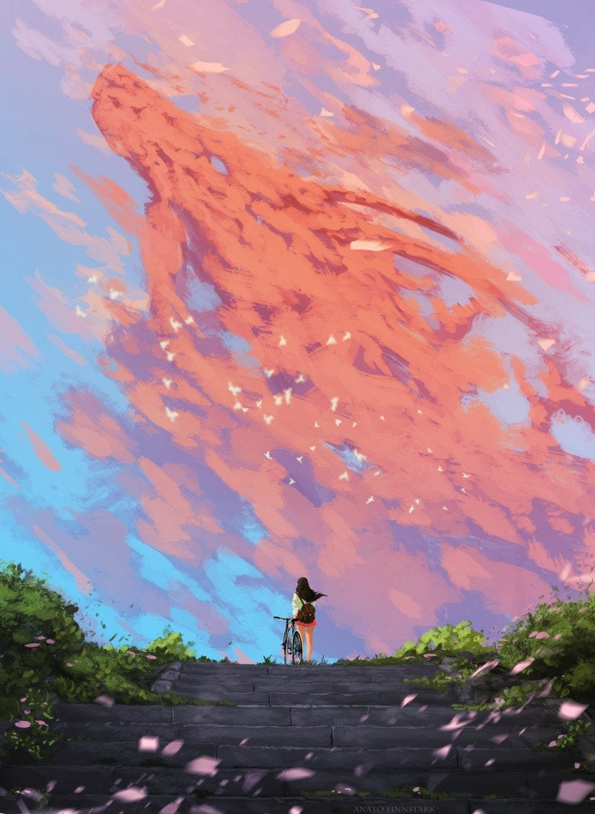

there is a lone god on a planet, bored he starts life to see what happens and tp prevent boredom. below the god is many lesser gods ment to report on whatever they were intended to report on. in this system there are 2 planets in binary (and tidally locked) the larger of the 2 planets begins to grow life to the enjoyment of the god as it gives him something to pay attention to in comparison to the emptyness of space. this life enventually grows to intelligence and is able to grow and claim the whole of the planet. seeing this newfound intelligence, a couple of the lesser gods believe that giving this new race divine power could make their work more interesting and better for everything. the main god refuses this and is keen on sitting back and watching with minimal intervention. this make a couple of the gods angry as they feel they arent being heard, and decide to start their own life on the smaller planet in the binary system. there the god of land, life, and (wisdom). give the same life divine powers which allows them to grow. the main god still disporves but still is keen to watch and instead of doing anything malicious sends over another lesser god to report to him directly on the state of the planet and its life, the only problem is that he appoints the god of (destruction) and believes that he could gain favor with the main god if he could wipe out the life on the smaller planet. (go into zelda-esk story with 3 protagonists and ganon not triforce of power). also give powers to show that gods exist and if nothing is done the beings could assume no higher being. back on the major planet life continues to grow, since the planet are tidally locked where civilization begins the other planet is on the other side of the planet over an uninhabited continent. this means that over the development of history they never see the other planet. once the age of exploration sets in and the nations start sending exbiditions to uncover new land for their country. when one country begins to cross the large expanse of the ocean off the coast they see land after a few days, the only problem is that this land keeps rising over the horizon (maybe they spot the land the first time, mark it on the map and leave, only for the next exbidition to see it in the sky). they do find more land but this new land up in the air leaves more questions with the world around them. back on the minor planet (i really just wanna rip off zelda) every few generations the god of destriction tries taking over the land. this is done through the corruption of a person willing to accept them. the other gods powers also rest within 3 beings, the power of the land (earth bending/ stoneweaving most likely), the courage of life, and the memories of the past with the knowledge to seal death away. time after time these 3 meet throughout time to defeat the god of destruction and bring peace, at least for a while.(wisdom vessel is an old wizzard, courage and power and 2 teenagers who have to struggle with harnessing their powers, maybe get together during the plot but i doubt i could write that)(not a full zelda ripoff :)(3 powers can change, just want 2 younger people with maybe a mentor, royal family maybe interconnected). since the land which the main plot of the minority planet is underneath the majority planet it has become a deep part of their religion and history (they believe in the 3 gods with destruction trying to destroy them) they see the majority planet as the resting place of destruction where he stays when hes not trying to destroy the world, but not more people. once the news got back to the old world of the land in the sky, the major emotion was shock, how could this land stay suspended, was it heaven. soon enough every major sea fairing power was trying to make discoveries about the world, so new colonies were set upon the continent below the minority planet, a majority of these colonies were smaller and more bent on figuring out what this new land in sky was rather than conquering lands for their crown. at some point the telescope gets invented, not wanting to lose out on fame the invemtor takes to the new world as quickly as possible with full support of the crown. on the first night in the dead of night when the minority planet is its brightest the inventpr of the telescope begins his research. not much information can be figured out due to the primitivness of the telescope but the difference between the trees amd the fields are obvious, almost like an unnatural pattern is viewable, the inventor continues to work on better processes to produce clearer images, but its seen know that its a planet that has ground and surface features. a couple years later (decade or 2 maybe) and fire burns through a good majority of the minority planet (due to the god of destruction). at this point the lens making process was refined and a lot of work was pushed into it to get a better image of the surface, turning the quest to understand this world from a race to teamwork. and with the telescope setup they can begin peering into their neighbors world to try and understand it more and more. they are able to see concentrations of where the fires are located, and less than a year after the fires it almost looks as if homes have taken their places, fields look more and more divided, and it seems more and more that this is another world. (the main church denied it being heaven when the fires broke out). Once the realization that there were the possibility of people on that planet many of the researchers wanted them to also know that they were there, the best way that they could do that would be to create a massive bonfire in the new world large enough that it could be seen from their world. preparations are made from all the trees in the new world and once lit, burns as bright as the sun for days. (this needs to be fixed, but idk how anything would come together because i want the realization of each other around this time) the god of destruction had been defeated for nearly a year, the 3 vessels of the gods have completed their life's goal and can live the rest of their life in peace. the old wizard goes off to train an apprentice(or something), (the other 2 stick together as they have grown closer?) , sitting out overlooking the vast expanses of the kingdom the girl (not decided which power is given) is looking up at the major planet, comtemplating if destruction could really preside on such a nice looking planet. As shes thinking this a red speck appears coming from the land on the planet. shes full of fear and joy, because that planet isnt where destruction rests, and what just happened to them could happen to that planet and the people on that land, (the people on that land she thinks again).
end of book 1?
basic jist, written out again cause thats how i revise
much needs to be altered, this is just the first part, there should be enough for a part 2 where the 2nd incursion happens and the major planet advances to look more into the minor planet (end at roughly the 1950's in earth time)
in a world like our own everything seems to be fine. a rouge asteroid seems to have been taken into a capured orbit around the planet and ends up in a very stable pattern. this allows the scientists to get a lot of data on this tiny rock and push for a misson to explore this rock closer than any other small specimine. The launch goes without a hitch and is able to quickly close in on the object, once within photo range different shapes begin to form, large pylons are jutting out and a majority of the light are coming from a pure white disk or a shiney yellow one. At the first hint of irregularoty the bells start going off as the people have no idea what the protocall is for anything like this. Once close enough and images crisp enough for detail its very obvious that its a spacecraft the was built, but no one could build it in secrecy
this ones not as flushed out i still gotta work on it
(idk how much of this i can write but i really like the idea). A world with massive semi-sentient clouds scattering the sky, each have their story with disdain and love for other clouds. story is some kids/people solving some fights between the clouds (fights are what causes storms)
something like this.
these need to keep on being revised as its never as good as i want them to be
in the creation of the world from cosmic beings, 9 runes were used, these runes were scattered across the world each with powers too much for any person.
Much of the power of the runes seep out into the world around it, if teams are able to traverse these area and find the runes, they can be used for their power. Thought those people wouldn't know the destruction the runes could cause when used wrong.
long ago a civilization aquired the rune of forest, this rune was able to grow all plants around it quicker than any fetalizer and in some cases enough to watch. this allowed the farmland to produce far more food growing their population. For years this allowed that civilization to prosper.
(through some reason i need to figure out) the rune gets disrupted, causing its power to overflow. The entire area becomes overflown with trees grown out of any crevice available, drowning out any house of the area (maybe killing all but the protagonist). Seeing his whole world set astray, one man takes the rune and runs off it in hopes to hide the rune and make sure no one else can be destroyed by its power.
Through his journeys he discovers an wonder lost to time, one that is ment to store the runes and seal them from the outside world. Ready to put the rune its alter he gets visions from the rune, showing him the power that he can have if he uses the rune, how much of a hero he could be to any civilization with the rune, and it entices him bringing the rune farther from its alter. But as the visions are playing, someone on the same mission as him jumps down into the wonder, sees home struggling with putting the rune in, and thrusts his hand into the runes final resting place allowing the visions to stop and him to come back to his senses, When the man looks around he sees a womans hand forcing his into the runes resting place. Initial he is confused and begins to ask questions, but eventually the girls pulls a rune out of her pack and begins to explain her own story and how its the same his where it had destroyed a whole civilization. The girl goes up and is able to place to rune even through all the visions the rune, when questioned on how she was able to do it its found out that she is a mage, leading to her sealing up the wonder and blinking them back to the surface. When question what they were gonna do next they wonder about their homes and how their destroyed, they wonder about others and if the undeiscovered runes, if found, could cause just as much destruction in the end. (the girl studies the runes and knew that only 2 were 'domesticated') In the end, they decide that they have no where else to be, so they might as well seal the rest of the runes since they were the only ones that knew of the location of the wonder.
Then they spend the rest of the story going on an adventure in order to get the rest of the runes from the world, probably a twist at the end involving the wonder but its 2:50 and i want sleep so im not deciding that rn.
Im gonna try and write as much as i can for this. there's 19 games in the story but only like 3 are fully important to the overarching story. I'll put more time into those but and give smaller information to 2 more. This is just a sumary and I plan on skipping a lot. Beginning: The world was created by 3 goddesses, Din, the goddess of power, nayru, the goddess of wisdom, and farore, the goddess of courage; each creating the land, nayru created the laws of the land, and farore created life to uphold the laws. With their labors complete, they created the triforce, 3 smaller triangles each holding part of the goddess: power, wisdom, and courage. If one were to touch the triforce without being completely equal in all 3 they would recieve the one they are most like, with the other 2 parts going to those most like their own parts of the triforce. The goddesses left the triforce in the hands of the goddess hylia, with the land she held being named hyrule. At the sight of the triforce the demon king demise wanted to take hold of it for himself, procuring an army against her. Hylia sent the surviving humans to outcroppings of earth and sent them to the sky above the clouds, alongside the triforce. Hylia had suffered injuries when she repeled back demise the first time but knew the seal she put on him could not hold and devised a plan. As the triforce could not be wielded by a god she denouced her divinity and transfered her soul to a mortal being. Before that she had created the goddess sword. Legend of Zelda Skyward sword: Up in the clouds a town called skyloft is able to make by. Hylia is reborn there named zelda. Alongside her childhood friend link they live as normal you can be on rocks in the sky until zelda is puled down to the surface. Link finds the goddess sword sealed away and heads for her, fighting a few people. during this time zelda finds the servant of hylia, Impa, where she regains her memories as hylia and continue to evade capture from demise's minions until her full powers awaken. During this time link is busy powering up the goddess sword with the blessings of the 3 goddesses. Eventually zeldas powers are fully regained and meets back up with link where she blesses the goddess sword, turning it into the master sword: the sword that seals the darkness. sometime after this, zelda is captured and used to revive demise which link defeats, saving zelda. In demises last breath he curses zelda and link, he vows an incarnation of his hatred(ganon) shall follow those who share blood of the goddess and the spirit of the hero in a cycle without end. With demise aand his minions gone the humans slowly make their way back to the ground, building a new empire and becoming hylians, citizens of hyrule, with other racces forming depending on where they settle Ocarina of time: This is an insanely sad story if you look into it https://www.youtube.com/watch?v=GyUcwsjyd8Q(dont watch until after reading all of this if you do watch this) a war has taken place between hyrule and the gerudo, a race of all females with one male born every thousand years, who becomes their king with this one being named ganondorf. During this war a wounded mother takes her son to the lost woods, where she entrusts her son,link, to the great deku tree, a wise tree whose lived for thousands of years. Once link had grown enough he is brought to the deku tree, where he finds he is a hylian and that the deku tree was cursed by ganondorf for not giving over the forest medallion which is needed to open the temple of time to access the master sword. Link is entrusted with the forest medalion and is sent off into greater hyrule where he must retrieve the fire medalion from the goron, a race who lives on a volcano and eats rocks, where ganondorf closed off their supply of rocks for not giving him the fire medalion (idk how that works they must be good rocks that he sealed off). He also is sent off for the water medalion in zora's domain, a race of fish people, where the medalion is stuck inside their own diety, lord jabu jabu. Ganondorf had also infected jabu jabu in hopes of the water medalion. With all 3 medalions he is able to head to the temple of time for the master sword, as link makes his way there he see's princess zelda running on horseback from hyrule castle and the temple of time, she's able to throw link the ocarina of time. ganondorf is quickly behind making chase, he doesnt see link as a threat quickly pushes him aside. Link makes his way to the temple of time and opens the door for the master sword. When he pulls the sword he opens ganondorf to the spirit realm where the triforce is and where link is trapped in stasis until he is old enough to hold the true power of tthe master sword. with ganon in hold of the triforce it splits with him taking the triforce of power, Link the triforce of courage, and zelda, still in hiding once link is returned back to hyrule, with the triforce of wisdom. Once back he must release the seven sages killed by ganondorf so that they may help and defeat ganondorf who has taken over all of hyrule in links slumber. This is where the split timeline takes place. One: your unable to defeat ganondorf, ganon is sealed by the sages still, theres nothing really of interest here as tall these stories predate a storyline. Downfall timeline Two you are able to defeat ganondorf, zelda feels sorry you werre never able to have a true childhood and sends you back in time you when you pulled the master sword, you go and warn eveyone of ganon and he is executed before he can take over. child timeline Three: zelda sends you back, but this timeline follows zelda, with link sent back to his childhood in a different timeline there is no hero. adult timeline. adult timeline: with no hero the next time ganon comes around there is no one to stop him, the people of hyrule pray to the gods. They tell the people go to the mountains. The gods flood all of hyrule leaving everything underwater, including ganon in hopes a new hero is able to rise(windwaker) child timeline: ganons botched execution, he takes over the twilight realm, weird story, havent played the game (twilight princess) enough time passes that all events from all timelines happen. Breath of the wild:cutscenes for what is harder to explain(https://www.youtube.com/watch?v=vwf2QDv5DfU) Its been 10000 years since the last time the calamity rose and ganons power reaked havoc over hyrule. Zelda is having troubles unlocking her powers with the onset of the calamity on the horizon, and fair enough as her mother who held the powers of the goddess died a year before her training was to begin. With no mentor she struggles. During this time a knight in training, named link, pulls the mastersword. Hearing of this the king makes link zelda's appointed knight in hopes that link can help zelda guide her to her powers. She is unable to still obtain her powers and begins to see link as the embodyment of all that is wrong with her. With how much time they spend together zelda's resentment eventually fades and begins to see link as a friend, but still questions her role in everything as she doesnt have the powers a princess should have and begins questioning her role in the preparation against the calamity. On her 17th birthday she heads to a spring in order to pray in hopes of recieving her powers there but ultimatley fails. On her way back shes met with the champions, those meant to assist link and zelda in their fight against the calamity. During this time the calamity finally awakes, the fight is about to begin. before it can even start the fight is over as the calamity kills the champions and destroys most of hyrule castle, leaving link and zelda on the run figuring out what to do. Constantly under attack from the calamity link slowly begins to weaken. In his last fight hes ready to defend zelda to the death, only for zelda to finally gain her powers, saving them both only for link to collapse with exhaustion. With link exhausted the only thing zelda could do was let link rest, return the master sword to recover as link had exhausted its power as well, and return to ganon, where she sealed herself and it away to allow time for link to recover and vanquish the calamity. It takes 100 years for link to recover, he's lost all his memories but knows his purpose, defeat ganon and save zelda.